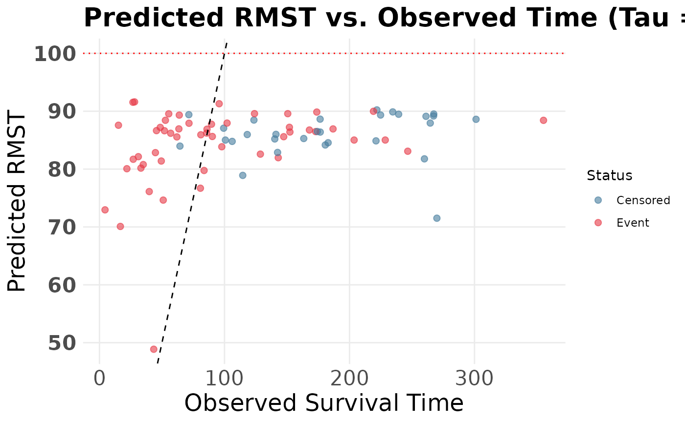

Evaluates the calibration of the causal RMST estimator by plotting the model's predicted RMST for each patient against their actual observed follow-up time.
Arguments
- fit
A fitted
SuperSurvensemble object.- data
A
data.framecontaining the patient covariates, times, and events.- time_col
Character string. The exact name of the observed follow-up time column in
data.- event_col
Character string. The exact name of the event indicator column in
data(e.g., 1 for event, 0 for censored).- times
Numeric vector of time points matching the prediction grid.
- tau
Numeric. A single truncation time limit up to which the RMST is calculated.
Examples
data("metabric", package = "SuperSurv")
dat <- metabric[1:80, ]
x_cols <- grep("^x", names(dat))[1:5]
X <- dat[, x_cols, drop = FALSE]
new.times <- seq(20, 120, by = 20)
fit <- SuperSurv(
time = dat$duration,
event = dat$event,
X = X,
newdata = X,
new.times = new.times,
event.library = c("surv.coxph", "surv.glmnet"),
cens.library = c("surv.coxph"),
control = list(saveFitLibrary = TRUE)
)
plot_rmst_vs_obs(
fit = fit,
data = dat,
time_col = "duration",
event_col = "event",
times = new.times,
tau = 350
)
